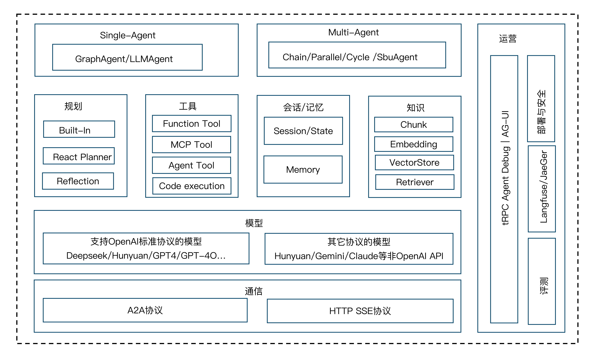
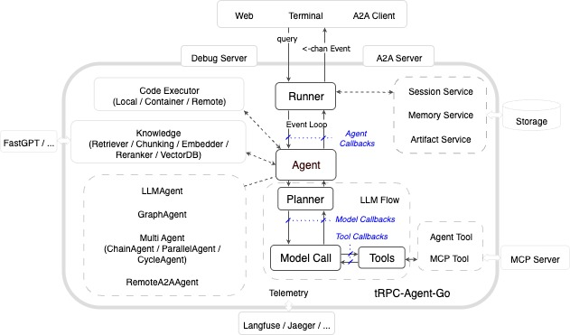
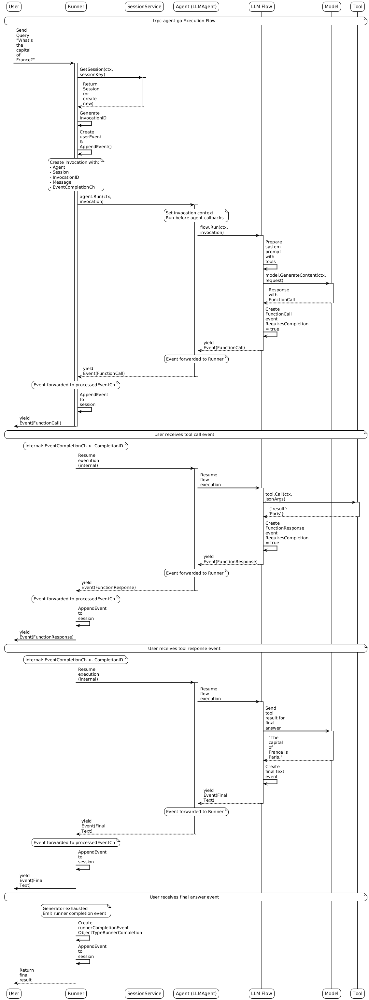

tRPC-Agent-Go：构建智能 AI 应用的 Go 语言 Agent 框架
tRPC 是腾讯内部覆盖最广的 RPC 开发框架，覆盖了腾讯大多数微服务，服务了如 QQ，腾讯视频，腾讯音乐，QQ 浏览器，腾讯新闻，元宝，电脑、手机管家，腾讯云等业务。其中 tRPC-Go 是使用最广的，累计覆盖将近 200w+节点，5w+服务。
2023 年起，LLM 发展迅速，而 Agent 开发框架成为连接 AI 能力与业务应用的重要基础设施。为了便于用户更好的开发 Agent 应用，并方便和 tRPC 微服务结合提供高性能，高可用的服务，tRPC-Go 在 25 年持续深耕 Agent 能力建设，本文将为你全面解读 tRPC-Agent-Go 如何构建智能 AI 应用。
技术选型和定位
业界框架技术路线分析
目前 AI Agent 应用开发框架主要分为两大技术路线：自主多 Agent 框架和编排式框架。
自主多 Agent 框架
自主多 Agent 框架体现了真正的 Agent（Autonomous Agent）理念，每个 Agent 都具备环境感知、自主决策和动作执行能力。多个 Agent 通过消息传递和协商机制实现分布式协作，能够根据环境变化动态调整策略，展现出智能涌现特性。
AutoGen （Microsoft）: 多 Agent 协作系统，支持 Agent 角色专业化和动态协商ADK （Google Agent Development Kit）: 提供完整的 Agent 生命周期管理和多 Agent 编排能力CrewAI : 面向任务的多 Agent 协作平台，强调角色定义和责任链模式Agno: 轻量级高性能 Agent 框架，专注于多模态能力和团队协作
编排式框架
编排式框架采用工作流思维，通过预定义的流程图或状态机来组织 LLM 调用和组件交互。虽然整个系统表现出”智能”特征，但其执行路径是确定性的，更像是”智能化的工作流”，而非真正的自主 Agent。
LangChain : 基于 Chain 抽象的组件编排框架，通过预定义执行链路构建 LLM 应用LangGraph : 有向无环图（DAG）状态机框架，提供确定性状态转换和条件分支
两种框架类型技术对比
对比维度
自主多 Agent 框架
编排式框架
控制模式
分布式自治决策，Agent 间协商
集中式流程编排，确定性执行
适用场景
开放域问题求解、创造性任务、多专业协作
结构化业务流程、数据处理管道、标准化作业
扩展方式
水平扩展 Agent 角色，垂直增强 Agent 能力
节点扩展和流程图复杂化
执行可预测性
涌现行为，结果多样性高
确定性执行，结果可复现
系统复杂度
Agent 交互复杂，调试困难
流程清晰，易于调试和监控
技术实现、
基于消息传递和对话协议
基于状态机和有向图执行
tRPC-Agent-Go 技术定位
行业与生态现状：随着 LLM 能力的持续突破，Agent 开发框架正成为 AI 应用开发的重要趋势。当前主流的自主多 Agent 框架（如 AutoGen、CrewAI、ADK、Agno 等）主要基于 Python 生态构建，为 Python 开发者提供了丰富的选择。然而，Go 语言凭借其卓越的并发性能、内存安全和部署便利性，在微服务架构中占据重要地位。目前较为成熟的 Go 语言 AI 开发框架大多数专注于编排式架构，主要适用于结构化业务流程，现代 LLM 在复杂推理、动态决策方面能力显著提升，自主多 Agent 框架相比编排式框架具有以下特征：
自适应性：Agent 基于上下文动态调整决策策略和执行路径
协作涌现：多 Agent 通过消息传递实现去中心化协商和任务分解
认知集成：深度整合 LLM 的推理、规划、反思能力形成智能决策链路
在我们的业务调研中，腾讯的业务对上面的特性有较强的需求。
因此 tRPC-Agent-Go 框架选型偏向于自主多 Agent 协作的模式和架构。但又存在如下问题
对于明确的场景和流程，AI 工作流更合适，能够给出更稳定的输出
腾讯内部已有大量的 AI 工作流，基于 tRPC 的开发经验，需要对存量进行兼容
基于上面的原因，tRPC-Agent-Go 的核心架构是基于自主多 Agent 协作的框架，同时又提供工作流编排的能力。
tRPC-Agent-Go 框架总览
tRPC-Agent-Go 框架集成了 LLM、智能规划器、会话管理、可观测性和丰富的工具生态系统。支持创建自主 Agent 和半自主 Agent，具备推理能力、工具调用、子 Agent 协作和长期状态保持能力，为开发者提供构建智能应用的完整技术栈。
整体架构图
模块图

Agent: 核心执行单元，负责处理用户输入并生成响应，提供智能推理引擎和任务编排能力，tRPC Agent 支持单 Agent（GraphAgent，LLMAgent）和 Multi-Agent（ChainAgent，ParallelAgent，CycleAgent），并支持基于 multi-agent-system 进行串联。
Runner: Agent 的执行器，负责管理 Agent 的生命周期管理、会话状态维护和事件流处理，串联 Session/Memory Service 等能力
Model: Model 模块提供了统一的 LLM 接口抽象，支持 OpenAI 兼容的 API 调用。通过标准化的接口设计，开发者可以灵活切换不同的模型提供商，实现模型的无缝集成和调用。该模块主要支持了 OpenAI like 接口的兼容性，已验证公司内外大多数接口。
Tool: Tool 模块提供了标准化的工具定义、注册和执行机制，使 Agent 能够与外部世界进行交互。支持同步调用（CallableTool）和流式调用（StreamableTool）两种模式，满足不同场景的技术需求， 提供各种工具能力 FunctionTool、MCP、DuckDuckGo 等
Session: Session 模块提供了会话管理功能，用于维护 Agent 与用户交互过程中的对话历史和上下文信息。会话管理模块支持多种存储后端，包括内存存储和 Redis 存储
Memory: 记录用户的长期记忆和个性化信息
Knowledge: 知识管理核心组件，它实现了完整的 RAG（检索增强生成）能力。该模块不仅提供了基础的知识存储和检索功能，还支持多种高级特性：
知识源管理：支持本地文件（Markdown、PDF、TXT 等）、目录批量导入、网页抓取，智能识别输入类型。向量存储：提供内存存储（开发测试）、PostgreSQL 、pgvector、ElasticSearch。Embedding：集成 OpenAI Embedding、Gemini Embedding，支持自定义模型，优化异步批处理性能。智能检索：语义相似度搜索，支持多轮对话上下文，结果重排序提升相关性。
Planner: Planner 模块为 Agent 提供智能规划能力，通过不同的规划策略增强 Agent 的推理和决策能力。支持内置思考模型、React 结构化规划和自定义显式规划指导三种模式，使 Agent 能够更好地分解复杂任务和制定执行计划
CodeExecutor：CodeExecutor 模块为 Agent 提供代码执行能力，支持在本地环境或 Docker 容器中执行 Python、Bash 代码，使 Agent 具备数据分析、科学计算、脚本自动化等实际工作能力。
Observability：集成 OpenTelemetry 标准，在 Agent 执行过程中自动记录详细的 telemetry 数据，支持全链路追踪和性能监控，内置诸多指标。
tRPC Agent 整体交互流程设计

整个 tRPC Agent 框架采用分层设计实现：
Runner 模块是 Agent 的执行器和运行环境，负责 Agent 的生命周期管理、会话状态维护和事件流处理，对接外部 web 服务
Event 模块负责 Agent 执行过程中的状态传递和实时通信。通过统一的事件模型，实现 Agent 间解耦通信和透明执行监控。
tRPC Agent 沿用 tRPC 的插件化设计，所有组件都能做插件化集成，tRPC Agent 有内置的组件，也做了各种生态组件的集成。
tRPC Agent 的 Callbacks 模块还提供了一套完整的回调机制，允许在 Agent 执行、模型推理和工具调用的关键节点进行拦截和处理。通过回调机制，可以实现日志记录、性能监控、内容审核等功能。
时序图
下面展示一个完整的用户和 Agent 对话的完整时序图，展示了 runner、service，Agent，LLMFlow，Model，Tool 之间的关系。

核心模块详解
Model 模块 - 大语言模型抽象层
Model 模块提供了统一的 LLM 接口抽象，支持 OpenAI 兼容的 API 调用。通过标准化的接口设计，开发者可以灵活切换不同的模型提供商，实现模型的无缝集成和调用。该模块主要支持了 OpenAI like 接口的兼容性，已验证公司内外大多数接口。
核心接口设计
OpenAI 兼容实现
框架提供了完整的 OpenAI 兼容实现，支持连接各种 OpenAI-like 接口：
// 创建OpenAI模型
model := openai . New ( "gpt-4o-mini" ,
openai . WithAPIKey ( "your-api-key" ),
openai . WithBaseURL ( "https://api.openai.com/v1" ), // 可自定义BaseURL
)
// 支持自定义配置
model := openai . New ( "custom-model" ,
openai . WithAPIKey ( "your-api-key" ),
openai . WithBaseURL ( "https://your-custom-endpoint.com/v1" ),
openai . WithChannelBufferSize ( 512 ),
openai . WithExtraFields ( map [ string ] interface {}{
"custom_param" : "value" ,
}),
)
支持的模型平台
当前框架支持所有提供 OpenAI 兼容 API 的模型平台，包括但不限于：
支持的平台
OpenAI - GPT-4o、GPT-4、GPT-3.5 等系列模型
腾讯云 - DeepSeek，Hunyuan 系列
其他云厂商 - 提供 OpenAI 兼容接口的各类模型，如 DeepSeek，Qwen 等
Model 模块的详细介绍详见：Model - tRPC-Agent-Go
Agent 模块 - Agent 执行引擎
Agent 模块是 tRPC-Agent-Go 的核心组件，提供智能推理引擎和任务编排能力。该模块具备以下核心功能：
多样化 Agent 类型：支持 LLM、Chain、Parallel、Cycle、Graph 等不同执行模式
工具调用与集成：提供丰富的外部能力扩展机制
事件驱动架构：实现流式处理和实时监控
层次化组合：支持子 Agent 协作和复杂流程编排
状态管理：确保长对话和会话持久化
Agent 模块通过统一接口标准实现高度模块化，为开发者提供从智能对话助手到复杂任务自动化的完整技术支持。
核心接口设计
type Agent interface {
// 执行Agent调用，返回事件流
Run ( ctx context . Context , invocation * Invocation ) ( <- chan * event . Event , error )
// 返回Agent可用的工具列表
Tools () [] tool . Tool
// 返回Agent的基本信息
Info () Info
// 返回子Agent列表，支持层次化组合
SubAgents () [] Agent
// 根据名称查找子Agent
FindSubAgent ( name string ) Agent
}
多种 Agent 类型
LLMAgent - 基础智能 Agent
核心特点: 基于 LLM 的智能 Agent，支持工具调用、流式输出和会话管理。
执行方式: 直接与 LLM 交互，支持单轮对话和多轮会话
适用场景: 智能客服、内容创作、代码助手、数据分析、问答系统
优势: 简单直接、响应快速、配置灵活、易于扩展
agent := llmagent . New (
"assistant" ,
llmagent . WithModel ( openai . New ( "gpt-4o-mini" )),
llmagent . WithInstruction ( "你是一个专业的AI助手" ),
llmagent . WithTools ([] tool . Tool { calculatorTool , searchTool }),
)
ChainAgent - 链式处理 Agent
核心特点: 流水线模式，多个 Agent 按顺序执行，前一个的输出成为后一个的输入。
执行方式: Agent1 → Agent2 → Agent3 顺序执行
适用场景: 文档处理流水线、数据 ETL、内容审核链条
技术优势: 专业分工、流程清晰、易于调试
chain := chainagent . New (
"content-pipeline" ,
chainagent . WithSubAgents ([] agent . Agent {
planningAgent , // 第一步：制定计划
researchAgent , // 第二步：收集信息
writingAgent , // 第三步：创作内容
}),
)
ParallelAgent - 并行处理 Agent
核心特点: 并发模式，多个 Agent 同时执行相同任务，然后合并结果。
执行方式: Agent1 + Agent2 + Agent3 同时执行
适用场景: 多专家评估、多维度分析、决策支持
技术优势: 并发执行、多角度分析、容错性强
parallel := parallelagent . New (
"multi-expert-evaluation" ,
parallelagent . WithSubAgents ([] agent . Agent {
marketAgent , // 市场分析专家
technicalAgent , // 技术评估专家
financeAgent , // 财务分析专家
}),
)
CycleAgent - 循环迭代 Agent
核心特点: 迭代模式，通过多轮”执行→评估→改进”循环，不断优化结果。
执行方式: 循环执行直到满足条件或达到最大轮次
适用场景: 复杂问题求解、内容优化、自动调试
技术优势: 自我改进、质量提升、智能停止
cycle := cycleagent . New (
"problem-solver" ,
cycleagent . WithSubAgents ([] agent . Agent {
generatorAgent , // 生成解决方案
reviewerAgent , // 评估质量
}),
// 设置最大迭代次数为5，防止无限循环
cycleagent . WithMaxIterations ( 5 ),
)
GraphAgent - 图工作流 Agent
核心特点: 基于图的工作流模式，支持条件路由和多节点协作的复杂任务处理。
设计目的: 为了满足和兼容腾讯内部之前大多数的 AI Agent 应用是基于图编排框架进行开发的，方便存量用户迁移，保留已有的开发习惯。
执行方式: 按图结构执行，支持 LLM 节点、工具节点、条件分支和状态管理
适用场景: 复杂决策流程、多步骤任务协作、动态路由处理、存量图编排应用迁移
技术优势: 灵活路由、状态共享、可视化流程、兼容现有开发模式
// 创建文档处理工作流
stateGraph := graph . NewStateGraph ( graph . MessagesStateSchema ())
// 创建分析工具
complexityTool := function . NewFunctionTool (
analyzeComplexity ,
function . WithName ( "analyze_complexity" ),
function . WithDescription ( "分析文档复杂度" ),
)
tools := map [ string ] tool . Tool { "analyze_complexity" : complexityTool }
// 构建工作流图
g , err := stateGraph .
AddNode ( "preprocess" , preprocessDocument ). // 预处理节点
AddLLMNode ( "analyze" , model ,
"分析文档复杂度，使用analyze_complexity工具" , tools ). // LLM分析节点
AddToolsNode ( "tools" , tools ). // 工具节点
AddNode ( "route_complexity" , routeComplexity ). // 路由决策节点
AddLLMNode ( "summarize" , model , "总结复杂文档" , nil ). // LLM总结节点
AddLLMNode ( "enhance" , model , "提升简单文档质量" , nil ). // LLM增强节点
AddNode ( "format_output" , formatOutput ). // 格式化节点
SetEntryPoint ( "preprocess" ). // 设置入口
SetFinishPoint ( "format_output" ). // 设置出口
AddEdge ( "preprocess" , "analyze" ). // 连接节点
AddToolsConditionalEdges ( "analyze" , "tools" , "route_complexity" ).
AddConditionalEdges ( "route_complexity" , complexityCondition , map [ string ] string {
"simple" : "enhance" ,
"complex" : "summarize" ,
}).
AddEdge ( "enhance" , "format_output" ).
AddEdge ( "summarize" , "format_output" ).
Compile ()
// 创建GraphAgent并运行
graphAgent , err := graphagent . New ( "document-processor" , g ,
graphagent . WithDescription ( "文档处理工作流" ),
graphagent . WithInitialState ( graph . State {}),
)
runner := runner . NewRunner ( "doc-workflow" , graphAgent )
events , _ := runner . Run ( ctx , userID , sessionID ,
model . NewUserMessage ( "处理这个文档内容" ))
Agent 详细介绍：Agent - tRPC-Agent-Go
Multi-Agent System - 多 Agent 协作系统
tRPC-Agent-Go 采用 SubAgent 机制构建多 Agent 系统，支持多个 Agent 协作处理复杂任务。
// 创建专业领域Agent
marketAnalyst := llmagent . New ( "market-analyst" ,
llmagent . WithModel ( model ),
llmagent . WithInstruction ( "你是市场分析专家" ),
llmagent . WithTools ([] tool . Tool { marketDataTool }))
techArchitect := llmagent . New ( "tech-architect" ,
llmagent . WithModel ( model ),
llmagent . WithInstruction ( "你是技术架构专家" ),
llmagent . WithTools ([] tool . Tool { techAnalysisTool }))
// 串行协作：市场分析 → 技术评估
planningChain := chainagent . New ( "product-planning" ,
chainagent . WithSubAgents ([] agent . Agent {
marketAnalyst , techArchitect ,
}))
// 并行协作：多专家同时评估
expertPanel := parallelagent . New ( "expert-panel" ,
parallelagent . WithSubAgents ([] agent . Agent {
marketAnalyst , techArchitect ,
}))
// 执行多Agent协作
events , err := expertPanel . Run ( ctx , & agent . Invocation {
Message : model . NewUserMessage ( "分析市场，设计产品方案" ),
})
Event 模块 - 事件驱动系统
Event 模块是 tRPC-Agent-Go 的事件系统核心，负责 Agent 执行过程中的状态传递和实时通信。通过统一的事件模型，实现 Agent 间解耦通信和透明执行监控。
核心特性
异步通信：Agent 通过事件流进行非阻塞通信，支持高并发执行
实时监控：所有执行状态通过事件实时传递，支持流式处理
统一抽象：不同类型 Agent 通过相同事件接口交互
多 Agent 协作：支持分支事件过滤和状态追踪
核心接口
// Event代表Agent执行过程中的一个事件
type Event struct {
* model . Response // 嵌入LLM响应的所有字段
InvocationID string // 本次调用的唯一标识
Author string // 事件发起者（Agent名称）
ID string // 事件唯一标识
Timestamp time . Time // 事件时间戳
Branch string // 分支标识（多Agent协作）
}
主要事件类型
chat.completion - LLM 对话完成事件
chat.completion.chunk - 流式对话事件
tool.response - 工具响应事件
agent.transfer - Agent 转移事件
error - 错误事件
Agent.Run()与事件处理
所有 Agent 都通过 Run()方法返回事件流，实现统一的执行接口：
// Agent接口定义
type Agent interface {
Run ( ctx context . Context , invocation * Invocation ) ( <- chan * event . Event , error )
}
// 创建Agent并处理事件流
agent := llmagent . New ( "assistant" ,
llmagent . WithModel ( model ),
llmagent . WithTools ( tools ))
events , err := agent . Run ( ctx , & agent . Invocation {
Message : model . NewUserMessage ( "计算 2+3 等于多少" ),
})
// 实时处理事件流
for event := range events {
switch event . Object {
case "chat.completion.chunk" :
fmt . Print ( event . Choices [ 0 ]. Delta . Content )
case "tool.response" :
fmt . Printf ( "\n[%s] 工具执行完成\n" , event . Author )
case "chat.completion" :
if event . Done {
fmt . Printf ( "\n[%s] 最终答案: %s\n" ,
event . Author , event . Choices [ 0 ]. Message . Content )
}
case "error" :
fmt . Printf ( "错误: %s\n" , event . Error . Message )
return event . Error
}
if event . Done {
break
}
}
多 Agent 协作中的事件流
chainAgent := chainagent . New ( "chain" ,
chainagent . WithSubAgents ([] agent . Agent {
analysisAgent , solutionAgent ,
}))
events , err := chainAgent . Run ( ctx , invocation )
if err != nil {
return err
}
for event := range events {
switch event . Object {
case "chat.completion.chunk" :
fmt . Print ( event . Choices [ 0 ]. Delta . Content )
case "chat.completion" :
if event . Done {
fmt . Printf ( "[%s] 完成: %s\n" , event . Author ,
event . Choices [ 0 ]. Message . Content )
}
case "tool.response" :
fmt . Printf ( "[%s] 工具执行完成\n" , event . Author )
case "error" :
fmt . Printf ( "[%s] 错误: %s\n" , event . Author , event . Error . Message )
}
}
Invocation - Agent 执行上下文
Invocation 是 Agent 执行的核心上下文对象，封装了单次调用所需的所有信息和状态。它作为 Agent.Run()方法的参数，支持事件追踪、状态管理和 Agent 间协作。
核心结构
type Invocation struct {
Agent Agent // 要调用的Agent实例
AgentName string // Agent名称
InvocationID string // 调用唯一标识
Branch string // 分支标识符（多Agent协作）
EndInvocation bool // 是否结束调用
Session * session . Session // 会话状态
Model model . Model // 语言模型
Message model . Message // 用户消息
EventCompletionCh <- chan string // 事件完成信号
RunOptions RunOptions // 运行选项
TransferInfo * TransferInfo // Agent转移信息
AgentCallbacks * Callbacks // Agent回调
ModelCallbacks * model . Callbacks // 模型回调
ToolCallbacks * tool . Callbacks // 工具回调
}
type TransferInfo struct {
TargetAgentName string // 目标Agent名称
Message string // 转移消息
EndInvocation bool // 转移后是否结束
}
主要功能
执行上下文：Agent 标识、调用追踪、分支控制
状态管理：会话历史、模型配置、消息传递
事件控制：异步通信、执行选项
Agent 协作：控制权转移、回调机制
使用示例
// 创建 Invocation 对象（高级用法）
invocation := agent . NewInvocation (
agent . WithInvocationAgent ( r . agent ), // Agent 实例
agent . WithInvocationSession ( & session . Session { ID : "session-001" }), // Session
agent . WithInvocationEndInvocation ( false ), // 是否结束调用
agent . WithInvocationMessage ( model . NewUserMessage ( "User input" )), // 用户消息
agent . WithInvocationModel ( modelInstance ), // 使用的模型
)
// 直接调用 Agent（高级用法）
ctx := context . Background ()
eventChan , err := llmAgent . Run ( ctx , invocation )
if err != nil {
log . Fatalf ( "执行 Agent 失败: %v" , err )
}
最佳实践
优先使用 Runner 自动创建 Invocation
框架会自动填充 Model、Callbacks 等字段
使用 transfer 工具实现 Agent 转移，避免直接设置 TransferInfo
Planner 模块 - 智能规划引擎
Planner 模块为 Agent 提供智能规划能力，通过不同的规划策略增强 Agent 的推理和决策能力。支持内置思考模型、React 结构化规划和自定义显式规划指导三种模式，使 Agent 能够更好地分解复杂任务和制定执行计划。其中 React 模式通过”思考-行动”循环和结构化标签，为普通模型提供显式的推理指导，确保 Agent 能够系统性地处理复杂任务。
核心接口设计
// Planner接口定义了所有规划器必须实现的方法
type Planner interface {
// 构建规划指令，为LLM请求添加规划相关的系统指令
BuildPlanningInstruction (
ctx context . Context ,
invocation * agent . Invocation ,
llmRequest * model . Request ,
) string
// 处理规划响应，对LLM的响应进行后处理和结构化
ProcessPlanningResponse (
ctx context . Context ,
invocation * agent . Invocation ,
response * model . Response ,
) * model . Response
}
内置规划策略
Builtin Planner - 内置思考规划器
适用于具有原生思考能力的模型，通过配置模型参数启用内部推理机制：
// 为OpenAI o系列模型配置推理强度
builtinPlanner := builtin . New ( builtin . Options {
ReasoningEffort : stringPtr ( "medium" ), // "low", "medium", "high"
})
// 为Claude/Gemini模型启用思考模式
builtinPlanner := builtin . New ( builtin . Options {
ThinkingEnabled : boolPtr ( true ),
ThinkingTokens : intPtr ( 1000 ),
})
React Planner - 结构化规划器
React（Reasoning and Acting）Planner 是一种 AI 推理模式，通过结构化标签引导模型进行”思考-行动”循环。它将复杂问题分解为四个标准化阶段：制定计划、推理分析、执行行动、提供答案。这种显式的推理过程让 Agent 能够系统性地处理复杂任务，同时提高决策的可解释性和错误检测能力。
集成到 Agent
React Planner 可以无缝集成到任何 LLMAgent 中，为 Agent 提供结构化的思考能力。集成后，Agent 会自动按照 React 模式的四个阶段来处理用户请求，确保每个复杂任务都能得到系统性的处理。
// 创建带规划能力的Agent
agent := llmagent . New (
"planning-assistant" ,
llmagent . WithModel ( openai . New ( "gpt-4o" )),
llmagent . WithPlanner ( reactPlanner ), // 集成规划器
llmagent . WithInstruction ( "你是一个善于规划的智能助手" ),
)
// Agent将自动使用规划器来：
// 1. 为复杂任务制定步骤化计划（PLANNING阶段）
// 2. 在执行过程中进行推理分析（REASONING阶段）
// 3. 调用相应工具执行具体操作（ACTION阶段）
// 4. 整合所有信息提供完整答案（FINAL_ANSWER阶段）
实际应用效果： 使用 React Planner 的 Agent 在处理复杂查询时，会展现出明显的结构化思考特征。例如，当用户询问”帮我制定一个旅行计划”时，Agent 会首先分析需求（PLANNING），然后推理最佳路线（REASONING），接着查询具体信息（ACTION），最后提供完整的旅行建议（FINAL_ANSWER）。这种方式不仅提高了回答质量，还让用户能够清楚地看到 Agent 的思考过程。
自定义规划器
开发者可以实现自定义规划器来满足特定需求：
// 自定义Reflection规划器示例
type ReflectionPlanner struct {
maxIterations int
}
func ( p * ReflectionPlanner ) BuildPlanningInstruction (
ctx context . Context ,
invocation * agent . Invocation ,
llmRequest * model . Request ,
) string {
return `请按以下步骤进行反思式规划：
1. 分析问题并制定初始计划
2. 执行计划并收集结果
3. 反思执行过程，识别问题和改进点
4. 基于反思优化计划并重新执行
5. 重复反思-优化过程直到达到满意结果`
}
func ( p * ReflectionPlanner ) ProcessPlanningResponse (
ctx context . Context ,
invocation * agent . Invocation ,
response * model . Response ,
) * model . Response {
// 处理反思内容，提取改进建议
// 实现反思逻辑...
return response
}
// 使用自定义规划器
reflectionPlanner := & ReflectionPlanner { maxIterations : 3 }
agent := llmagent . New (
"reflection-agent" ,
llmagent . WithModel ( model ),
llmagent . WithPlanner ( reflectionPlanner ), // 使用自定义规划器
)
Planner 模块的详细介绍请参阅：Planner - tRPC-Agent-Go
Tool 模块提供了标准化的工具定义、注册和执行机制，使 Agent 能够与外部世界进行交互。支持同步调用（CallableTool）和流式调用（StreamableTool）两种模式，满足不同场景的技术需求。
核心接口设计
// 基础工具接口
type Tool interface {
Declaration () * Declaration // 返回工具元数据
}
// 同步调用工具接口
type CallableTool interface {
Call ( ctx context . Context , jsonArgs [] byte ) ( any , error )
Tool
}
// 流式工具接口
type StreamableTool interface {
StreamableCall ( ctx context . Context , jsonArgs [] byte ) ( * tool . StreamReader , error )
Tool
}
工具创建示例
// 计算器工具
calculatorTool := function . NewFunctionTool (
func ( ctx context . Context , input struct {
Expression string `json:"expression"`
}) ( struct {
Result float64 `json:"result"`
}, error ) {
result , err := evaluateExpression ( input . Expression )
return struct { Result float64 }{ result }, err
},
function . WithName ( "calculator" ),
function . WithDescription ( "执行数学计算" ),
)
type weatherInput struct {
Location string `json:"location"`
}
type weatherOutput struct {
Weather string `json:"weather"`
}
// 2. 实现流式工具函数
func getStreamableWeather ( input weatherInput ) * tool . StreamReader {
stream := tool . NewStream ( 10 )
go func () {
defer stream . Writer . Close ()
// 模拟逐步返回天气数据
result := "Sunny, 25°C in " + input . Location
for i := 0 ; i < len ( result ); i ++ {
chunk := tool . StreamChunk {
Content : weatherOutput {
Weather : result [ i : i + 1 ],
},
Metadata : tool . Metadata { CreatedAt : time . Now ()},
}
if closed := stream . Writer . Send ( chunk , nil ); closed {
break
}
time . Sleep ( 10 * time . Millisecond ) // 模拟延迟
}
}()
return stream . Reader
}
// 3. 创建流式工具
weatherStreamTool := function . NewStreamableFunctionTool [ weatherInput , weatherOutput ](
getStreamableWeather ,
function . WithName ( "get_weather_stream" ),
function . WithDescription ( "流式获取天气信息" ),
)
// 创建多工具Agent
agent := llmagent . New (
"multi-tool-assistant" ,
llmagent . WithModel ( model ),
llmagent . WithTools ([] tool . Tool {
calculatorTool ,
weatherStreamTool ,
duckduckgo . NewTool (),
}),
)
MCP 工具集成
框架支持各种 mcp 工具调用，提供多种连接方式：
// STDIO mcp工具
mcpToolSet := mcp . NewMCPToolSet (
mcp . ConnectionConfig {
Transport : "stdio" ,
Command : "python" ,
Args : [] string { "-m" , "my_mcp_server" },
Timeout : 10 * time . Second ,
},
)
// SSE mcp工具
mcpToolSet := mcp . NewMCPToolSet (
mcp . ConnectionConfig {
Transport : "sse" ,
ServerURL : "http://localhost:8080/sse" ,
Timeout : 10 * time . Second ,
Headers : map [ string ] string {
"Authorization" : "Bearer your-token" ,
},
},
)
// streamable mcp工具
mcpToolSet := mcp . NewMCPToolSet (
mcp . ConnectionConfig {
Transport : "streamable_http" , // 注意：使用完整名称
ServerURL : "http://localhost:3000/mcp" ,
Timeout : 10 * time . Second ,
},
)
agent := llmagent . New ( "mcp-assistant" ,
llmagent . WithModel ( model ),
llmagent . WithToolSets ([] tool . ToolSet { mcpToolSet }))
Tool 模块的详细介绍请参阅：Tool - tRPC-Agent-Go
CodeExecutor 模块 - 代码执行引擎
CodeExecutor 模块为 Agent 提供代码执行能力，支持在本地环境或 Docker 容器中执行 Python、Bash 代码，使 Agent 具备数据分析、科学计算、脚本自动化等实际工作能力。
核心接口设计
// CodeExecutor是代码执行的核心接口
type CodeExecutor interface {
ExecuteCode ( context . Context , CodeExecutionInput ) ( CodeExecutionResult , error )
CodeBlockDelimiter () CodeBlockDelimiter
}
// 代码执行输入和结果
type CodeExecutionInput struct {
CodeBlocks [] CodeBlock
ExecutionID string
}
type CodeExecutionResult struct {
Output string // 执行输出
OutputFiles [] File // 生成的文件
}
两种执行器实现
LocalCodeExecutor - 本地执行器
直接在本地环境执行代码，适用于开发测试和可信环境：
// 创建本地执行器
localExecutor := local . New (
local . WithWorkDir ( "/tmp/code-execution" ),
local . WithTimeout ( 30 * time . Second ),
local . WithCleanTempFiles ( true ),
)
// 集成到Agent
agent := llmagent . New (
"data-analyst" ,
llmagent . WithModel ( model ),
llmagent . WithCodeExecutor ( localExecutor ), // 集成代码执行器
llmagent . WithInstruction ( "你是数据分析师，可以执行Python代码" ),
)
ContainerCodeExecutor - 容器执行器
在隔离的 Docker 容器中执行代码，提供更高安全性，适用于生产环境：
// 创建容器执行器
containerExecutor , err := container . New (
container . WithContainerConfig ( container . Config {
Image : "python:3.11-slim" ,
}),
container . WithHostConfig ( container . HostConfig {
AutoRemove : true ,
NetworkMode : "none" , // 网络隔离
Resources : container . Resources {
Memory : 128 * 1024 * 1024 , // 内存限制
},
}),
)
agent := llmagent . New (
"secure-analyst" ,
llmagent . WithModel ( model ),
llmagent . WithCodeExecutor ( containerExecutor ), // 使用容器执行器
)
自动代码块识别
框架自动从 Agent 回复中提取 markdown 代码块并执行：
// Agent回复包含代码块时会自动执行：
// ```python
// import statistics
// data = [1, 2, 3, 4, 5]
// print(f"平均值: {statistics.mean(data)}")
支持 python 和 bash 代码
使用示例
// 数据分析Agent
dataAgent := llmagent . New (
"data-scientist" ,
llmagent . WithModel ( model ),
llmagent . WithCodeExecutor ( local . New ()),
llmagent . WithInstruction ( "你是数据科学家，使用Python标准库进行数据分析" ),
)
// 用户提问，Agent自动生成并执行代码
runner := runner . NewRunner ( "analysis" , dataAgent )
events , _ := runner . Run ( ctx , userID , sessionID ,
model . NewUserMessage ( "分析数据: 23, 45, 12, 67, 34, 89" ))
// Agent自动：
// 1. 生成Python分析代码
// 2. 执行代码获取结果
// 3. 解读分析结果
CodeExecutor 模块使 Agent 从纯对话升级为具备实际计算能力的智能助手，支持数据分析、脚本自动化、科学计算等应用场景。后续支持更多的 remote 代码执行器
Runner 模块 - Agent 执行器
Runner 模块是 Agent 的执行器和运行环境，负责 Agent 的生命周期管理、会话状态维护和事件流处理。
核心接口
type Runner interface {
Run (
ctx context . Context ,
userID string , // 用户标识
sessionID string , // 会话标识
message model . Message , // 输入消息
runOpts ... agent . RunOption , // 运行选项
) ( <- chan * event . Event , error ) // 返回事件流
}
使用示例
// 步骤1: 创建Agent
agent := llmagent . New (
"customer-service-agent" ,
llmagent . WithModel ( openai . New ( "gpt-4o-mini" )),
llmagent . WithInstruction ( "你是专业的客服助手" ),
)
// 步骤2: 创建Runner并绑定Agent
r := runner . NewRunner (
"customer-service-app" , // 应用名称
agent , // 绑定Agent
)
ctx := context . Background ()
userMessage := model . NewUserMessage ( "你好！" )
eventChan , err := r . Run ( ctx , "user1" , "session1" , userMessage )
if err != nil {
panic ( err )
}
for event := range eventChan {
if event . Error != nil {
fmt . Printf ( "错误: %s\n" , event . Error . Message )
continue
}
if len ( event . Choices ) > 0 {
fmt . Print ( event . Choices [ 0 ]. Delta . Content )
}
}
Runner 模块的详细介绍请参阅 Runner - tRPC-Agent-Go
Memory 模块 - 智能记忆系统
Memory 模块为 Agent 提供持久化的记忆能力，使 Agent 能够跨会话记住和检索用户信息，提供个性化的交互体验。
工作原理
Agent 通过内置的记忆工具自动识别和存储重要信息，支持主题标签分类管理，并在需要时智能检索相关记忆。通过 AppName+UserID 实现多租户隔离，确保用户数据安全。
应用场景
适用于个人助手、客服机器人、教育辅导、项目协作等需要跨会话记忆用户信息的场景，如记住用户偏好、追踪问题解决进度、保存学习计划等。
核心接口
type Service interface {
// 添加新记忆
AddMemory ( ctx context . Context , userKey UserKey , memory string , topics [] string ) error
// 更新现有记忆
UpdateMemory ( ctx context . Context , memoryKey Key , memory string , topics [] string ) error
// 删除指定记忆
DeleteMemory ( ctx context . Context , memoryKey Key ) error
// 清空用户所有记忆
ClearMemories ( ctx context . Context , userKey UserKey ) error
// 读取最近记忆
ReadMemories ( ctx context . Context , userKey UserKey , limit int ) ([] * Entry , error )
// 搜索记忆
SearchMemories ( ctx context . Context , userKey UserKey , query string ) ([] * Entry , error )
// 获取记忆工具
Tools () [] tool . Tool
}
// 数据结构
type Entry struct {
ID string `json:"id"`
AppName string `json:"app_name"`
UserID string `json:"user_id"`
Memory * Memory `json:"memory"`
CreatedAt time . Time `json:"created_at"`
UpdatedAt time . Time `json:"updated_at"`
}
type Memory struct {
Memory string `json:"memory"`
Topics [] string `json:"topics,omitempty"`
LastUpdated * time . Time `json:"last_updated,omitempty"`
}
快速集成
llmAgent := llmagent . New (
"memory-assistant" ,
llmagent . WithTools ( memoryService . Tools ()), // ✅ 步骤1：注册工具
)
runner := runner . NewRunner (
"app" ,
llmAgent ,
runner . WithMemoryService ( memoryService ), // ✅ 步骤2：设置服务
)
内置记忆工具
工具名称
默认状态
功能描述
memory_add
✅ 启用
添加新的记忆条目
memory_update
✅ 启用
更新现有记忆内容
memory_search
✅ 启用
根据关键词搜索记忆
memory_load
✅ 启用
加载最近的记忆记录
memory_delete
❌ 禁用
删除指定记忆条目
memory_clear
❌ 禁用
清空用户所有记忆
使用示例
// Agent会自动调用记忆工具：
// 记录信息: "我叫张三，住在北京"
// → memory_add("张三住在北京", ["个人信息"])
// 查询信息: "我住在哪里？"
// → memory_search("住址") → 返回相关记忆
// 更新信息: "我搬到上海了"
// → memory_update(id, "张三住在上海", ["个人信息"])
Memory 模块的详细介绍请参阅：Memory - tRPC-Agent-Go
Session 模块 - 会话管理系统
Session 模块提供了会话管理功能，用于维护 Agent 与用户交互过程中的对话历史和上下文信息。会话管理模块支持多种存储后端，包括内存存储和 Redis 存储，后续会根据用户需求补齐 MySql、PgSql 等存储后端，为 Agent 应用提供了灵活的状态持久化能力。
核心特性
会话持久化：保存完整的对话历史和上下文
多存储后端：支持内存存储和 Redis 存储，可按需扩展更多存储实现
事件追踪：完整记录会话中的所有交互事件
会话层次结构
Application ( 应用 )
├── User Sessions ( 用户会话 )
│ ├── Session 1 ( 会话1 )
│ │ ├── Session Data ( 会话数据 )
│ │ └── Events ( 事件列表 )
│ └── Session 2 ( 会话2 )
│ ├── Session Data ( 会话数据 )
│ └── Events ( 事件列表 )
└── App Data ( 应用数据 )
核心接口
// Service定义会话服务的核心接口
type Service interface {
// CreateSession creates a new session.
CreateSession ( ctx context . Context , key Key , state StateMap , options ... Option ) ( * Session , error )
// GetSession gets a session.
GetSession ( ctx context . Context , key Key , options ... Option ) ( * Session , error )
// ListSessions lists all sessions by user scope of session key.
ListSessions ( ctx context . Context , userKey UserKey , options ... Option ) ([] * Session , error )
// DeleteSession deletes a session.
DeleteSession ( ctx context . Context , key Key , options ... Option ) error
// AppendEvent appends an event to a session.
AppendEvent ( ctx context . Context , session * Session , event * event . Event , options ... Option ) error
// Close closes the service.
Close () error
}
存储后端支持
// 内存存储（适用于开发测试）
sessionService := inmemory . NewSessionService ()
// Redis存储（适用于生产环境）
sessionService , err := redis . NewService (
redis . WithURL ( "redis://localhost:6379/0" ),
)
与 Runner 集成
// 创建Runner并配置会话服务
runner := runner . NewRunner (
"my-agent" ,
llmAgent ,
runner . WithSessionService ( sessionService ), // 集成会话管理
)
// 使用Runner进行多轮对话
eventChan , err := runner . Run ( ctx , userID , sessionID , userMessage )
Session 模块的详细介绍请参阅：Session - tRPC-Agent-Go
Knowledge 模块 - 知识管理系统
Knowledge 模块是 trpc-agent-go 中的知识管理核心组件，它实现了完整的 RAG（检索增强生成）能力。该模块不仅提供了基础的知识存储和检索功能，还支持多种高级特性：
支持多种格式的本地文件（Markdown、PDF、TXT 等）
支持目录批量导入，自动处理子目录
支持网页抓取，可直接从 URL 加载内容
智能识别输入类型，自动选择合适的处理器
内存存储：适用于开发和小规模测试
PostgreSQL + pgvector：适用于生产环境，支持持久化
TcVector：云原生解决方案，适合大规模部署
默认集成 OpenAI Embedding 模型
支持自定义 Embedding 模型接入
异步批处理优化性能
基于语义的相似度搜索
支持多轮对话历史上下文
结果重排序提升相关性
核心接口设计
// Knowledge是知识管理的主要接口
type Knowledge interface {
// Search执行语义搜索并返回相关结果
Search ( ctx context . Context , req * SearchRequest ) ( * SearchResult , error )
}
// SearchRequest代表带上下文的搜索请求
type SearchRequest struct {
Query string // 搜索查询文本
History [] ConversationMessage // 对话历史用于上下文
UserID string // 用户标识
SessionID string // 会话标识
}
// SearchResult代表知识搜索的结果
type SearchResult struct {
Document * document . Document // 匹配的文档
Score float64 // 相关性分数
Text string // 文档内容
}
与 Agent 集成
// 创建知识库
kb := knowledge . New (
knowledge . WithVectorStore ( inmemory . New ()),
knowledge . WithEmbedder ( openai . New ()),
knowledge . WithSources ([] source . Source {
file . New ([] string { "./docs/llm.md" }),
url . New ([] string { "https://wikipedia.org/wiki/LLM" }),
}),
)
// 加载知识库
kb . Load ( ctx )
// 创建带知识库的Agent
agent := llmagent . New (
"knowledge-assistant" ,
llmagent . WithModel ( model ),
llmagent . WithKnowledge ( kb ), // 自动添加knowledge_search工具
llmagent . WithInstruction ( "使用knowledge_search工具搜索相关资料来回答问题" ),
)
Knowledge 模块的详细介绍请参阅：Knowledge - tRPC-Agent-Go
Observability 模块 - 可观测性系统
Observability 模块集成 OpenTelemetry 标准，在 Agent 执行过程中自动记录详细的 telemetry 数据，支持全链路追踪和性能监控。框架复用 OpenTelemetry 标准接口，无自定义抽象层。
快速启动
import (
agentmetric "trpc.group/trpc-go/trpc-agent-go/telemetry/metric"
agenttrace "trpc.group/trpc-go/trpc-agent-go/telemetry/trace"
)
func main () {
ctx := context . Background ()
// 启动telemetry收集
cleanupTrace , _ := agenttrace . Start ( ctx ) // 默认localhost:4317
cleanupMetric , _ := agentmetric . Start ( ctx ) // 默认localhost:4318
defer cleanupTrace ()
defer cleanupMetric ()
// Agent执行过程将自动记录telemetry数据
agent := llmagent . New ( "assistant" ,
llmagent . WithModel ( openai . New ( "gpt-4o-mini" )))
runner := runner . NewRunner ( "app" , agent )
events , _ := runner . Run ( ctx , "user-001" , "session-001" ,
model . NewUserMessage ( "你好" ))
}
自动记录的 Trace 链路
框架自动创建以下 Span 层次结构：
invocation # 对话顶层span
├── call_llm # LLM API调用
├── execute_tool calculator # 工具调用
├── execute_tool search # 工具调用
└── execute_tool ( merged ) # 并行工具调用合并
# GraphAgent执行链路
invocation
└── execute_graph
├── execute_node preprocess
├── execute_node analyze
│ └── run_model
└── execute_node format
主要 Span 属性
通用属性：invocation_id, session_id, event_id
LLM 调用：gen_ai.request.model, llm_request/response JSON
工具调用：gen_ai.tool.name, tool_call_args, tool_response JSON
Graph 节点：node_id, node_name, node_description
配置选项
自定义端点配置
cleanupTrace , _ := agenttrace . Start ( ctx ,
agenttrace . WithEndpoint ( "otel-collector:4317" ))
自定义 Metrics
counter , _ := metric . Meter . Int64Counter ( "agent.requests.total" )
counter . Add ( ctx , 1 , metric . WithAttributes (
attribute . String ( "agent.name" , "assistant" )))
Observability 模块的详细介绍请参阅：可观测 - tRPC-Agent-Go
Debug Server - 调试服务器
Debug Server 提供 HTTP 调试服务，兼容 ADK Web UI，支持 Agent 执行的可视化调试和实时监控。
快速启动
// 步骤1: 准备Agent实例
agents := map [ string ] agent . Agent {
"chat-assistant" : llmagent . New (
"chat-assistant" ,
llmagent . WithModel ( openai . New ( "gpt-4o-mini" )),
llmagent . WithInstruction ( "你是一个智能助手" ),
),
}
// 步骤2: 创建Debug Server
debugServer := debug . New ( agents )
// 步骤3: 启动HTTP服务器
http . Handle ( "/" , debugServer . Handler ())
log . Fatal ( http . ListenAndServe ( ":8080" , nil ))
Debug Server 的详细介绍请参阅：调试 - tRPC-Agent-Go
Callbacks 模块 - 回调机制
Callbacks 模块提供了一套完整的回调机制，允许在 Agent 执行、模型推理和工具调用的关键节点进行拦截和处理。通过回调机制，可以实现日志记录、性能监控、内容审核等功能。
回调类型
_ = model . NewCallbacks ().
RegisterBeforeModel ( func ( ctx context . Context , req * model . Request ) ( * model . Response , error ) {
fmt . Printf ( "🌐 Global BeforeModel: processing %d messages\n" , len ( req . Messages ))
return nil , nil
}).
RegisterAfterModel ( func ( ctx context . Context , req * model . Request , rsp * model . Response , modelErr error ) ( * model . Response , error ) {
if modelErr != nil {
fmt . Printf ( "🌐 Global AfterModel: error occurred\n" )
} else {
fmt . Printf ( "🌐 Global AfterModel: processed successfully\n" )
}
return nil , nil
})
BeforeModel：模型推理前触发，可用于输入拦截、日志记录
AfterModel：每个输出块后触发，可用于内容审核、结果处理
ToolCallbacks（工具回调）
_ = tool . NewCallbacks ().
RegisterBeforeTool ( func ( ctx context . Context , toolName string , toolDeclaration * tool . Declaration , jsonArgs [] byte ) ( any , error ) {
fmt . Printf ( "🌐 Global BeforeTool: executing %s\n" , toolName )
return nil , nil
}).
RegisterAfterTool ( func ( ctx context . Context , toolName string , toolDeclaration * tool . Declaration , jsonArgs [] byte , result any , runErr error ) ( any , error ) {
if runErr != nil {
fmt . Printf ( "🌐 Global AfterTool: %s failed\n" , toolName )
} else {
fmt . Printf ( "🌐 Global AfterTool: %s completed\n" , toolName )
}
return nil , nil
})
BeforeTool：工具调用前触发，可用于参数验证、结果模拟
AfterTool：工具调用后触发，可用于结果处理、日志记录
AgentCallbacks（Agent 回调）
_ = agent . NewCallbacks ().
RegisterBeforeAgent ( func ( ctx context . Context , invocation * agent . Invocation ) ( * model . Response , error ) {
fmt . Printf ( "🌐 Global BeforeAgent: starting %s\n" , invocation . AgentName )
return nil , nil
}).
RegisterAfterAgent ( func ( ctx context . Context , invocation * agent . Invocation , runErr error ) ( * model . Response , error ) {
if runErr != nil {
fmt . Printf ( "🌐 Global AfterAgent: execution failed\n" )
} else {
fmt . Printf ( "🌐 Global AfterAgent: execution completed\n" )
}
return nil , nil
})
BeforeAgent：Agent 执行前触发，可用于权限检查、输入验证
AfterAgent：Agent 执行后触发，可用于结果处理、错误处理
使用场景
监控和日志：记录模型调用、工具使用和 Agent 执行过程
性能优化：监控响应时间和资源使用情况
安全和审核：过滤输入内容，审核输出内容
自定义处理：格式化结果，重试错误，增强内容
集成示例
// 创建带回调的Agent
agent := llmagent . New (
"callback-demo" ,
llmagent . WithModel ( model ),
llmagent . WithModelCallbacks ( modelCallbacks ),
llmagent . WithToolCallbacks ( toolCallbacks ),
llmagent . WithAgentCallbacks ( agentCallbacks ),
)
// 创建Runner并执行
runner := runner . NewRunner (
"callback-app" ,
agent ,
runner . WithSessionService ( sessionService ),
)
// 执行对话
events , err := runner . Run ( ctx , userID , sessionID ,
model . NewUserMessage ( "Hello" ))
Callbacks 模块通过提供灵活的回调机制，使得 Agent 的行为更可控、更透明，同时为监控、审核、定制化等需求提供了强大的支持。
A2A 集成 - Agent 间通信
A2A (Agent-to-Agent) 模块提供 Agent 间通信能力，支持将 tRPC-Agent-Go 的 Agent 快速集成到 A2A 协议中，实现多 Agent 协作以及对外暴露能力。
快速启动
// 步骤1: 创建Agent
agent := llmagent . New (
"my-agent" ,
llmagent . WithModel ( openai . New ( "gpt-4o-mini" )),
llmagent . WithInstruction ( "你是一个智能助手" ),
)
// 步骤2: 创建A2A服务器
a2aServer , err := a2a . New (
a2a . WithAgent ( agent , true ), // 绑定Agent
a2a . WithHost ( "localhost:8080" ), // 设置监听地址
)
if err != nil {
log . Fatal ( err )
}
// 步骤3: 启动服务器
ctx := context . Background ()
if err := a2aServer . Start ( ctx ); err != nil {
log . Fatal ( err )
}
log . Println ( "A2A服务器已启动: localhost:8080" )
业务实践
tRPC-Agent-Go 在内部用诸多应用，在这里介绍下四个业务场景：
元宝-深度写作
业务通过 GraphAgent 编排自动化写作流水线。 A2AAgent 先行调用搜索服务获取素材，随后 LLM Node 生成 XML 大纲并流式处理，最后循环调用 Writer LLM 节点按大纲逐步生成内容。
2. 腾讯体育-体育大聪明
战报生成： LLMAgent 通过 MCP 工具 获取数据，并以其“思考模式”分步生成回顾、摘要与标题。
体育搜索： GraphAgent 驱动业务流程：LLM 节点先改写查询，Planner 节点规划 MCP 工具 调用获取信息，最终输出并流式解析为前端卡片。
多轮助手： GraphAgent 实现路由，通过 A2AAgent 调度体育类请求至专属 Agent，非体育类问题则路由至联网 SubAgent。
3. AMS 广告营销-报表 Agent
GraphAgent 是核心：其 LLM Node 结合 tRAG 分析意图，流式生成“行动模板”并推送前端。随后根据模板调用 MCP 工具 获取业务数据，最终组装成图表、表格等组件化报表。
4. 腾讯视频海外-翻译 Agent
基于 tRPC-Agent-Go 框架 快速构建了四个专业 LLMAgent （剧情提取、术语提取、术语翻译、字幕翻译）形成工作流。框架的封装回调机制将复杂逻辑内聚，对外提供简洁接口，高效完成从原始字幕到多语言终稿的转换。
写在最后
特别感谢腾讯各业务单元，包括腾讯元宝、腾讯视频、腾讯新闻、IMA 和 QQ 音乐的宝贵支持和生产环境验证推动框架发展。
感谢优秀的开源框架如 ADK、Agno、CrewAI、AutoGen 等的启发，让 tRPC-Agent-Go 得以站在巨人的肩膀上快速前行！🙏
tRPC-Agent-Go github：tRPC-Agent-Go 欢迎 star！
除此之外 tRPC 的 Go AI 生态还提供了 A2A（tRPC-A2A-Go ）和 MCP 框架（tRPC-MCP-Go ）的开发能力也欢迎大家使用。
2026-06-09 08:42:05
2026-06-09 08:42:05